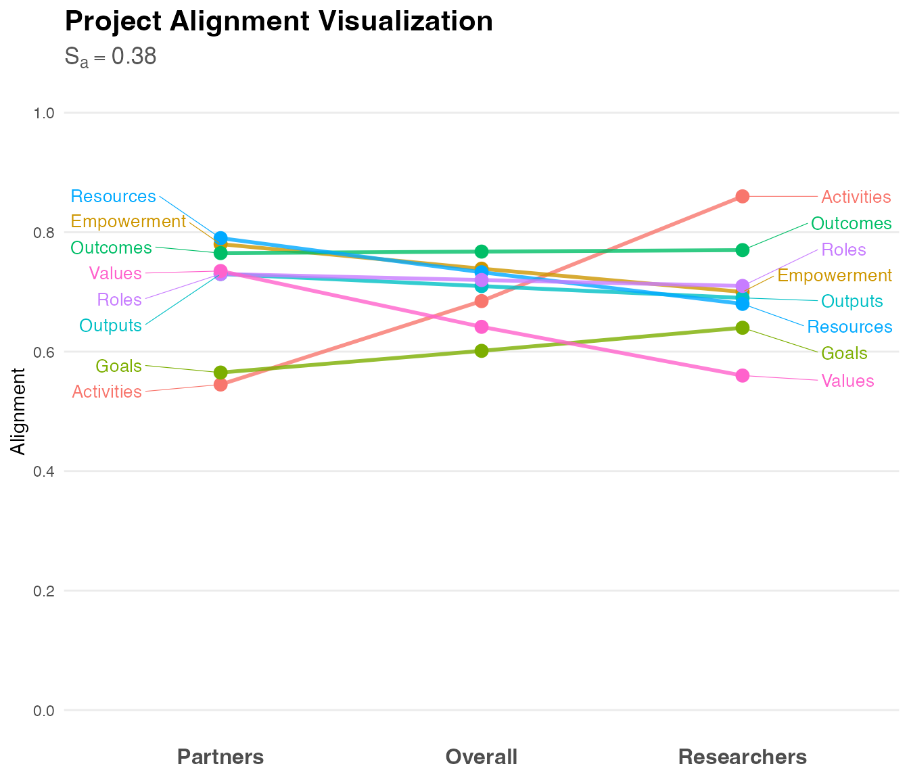
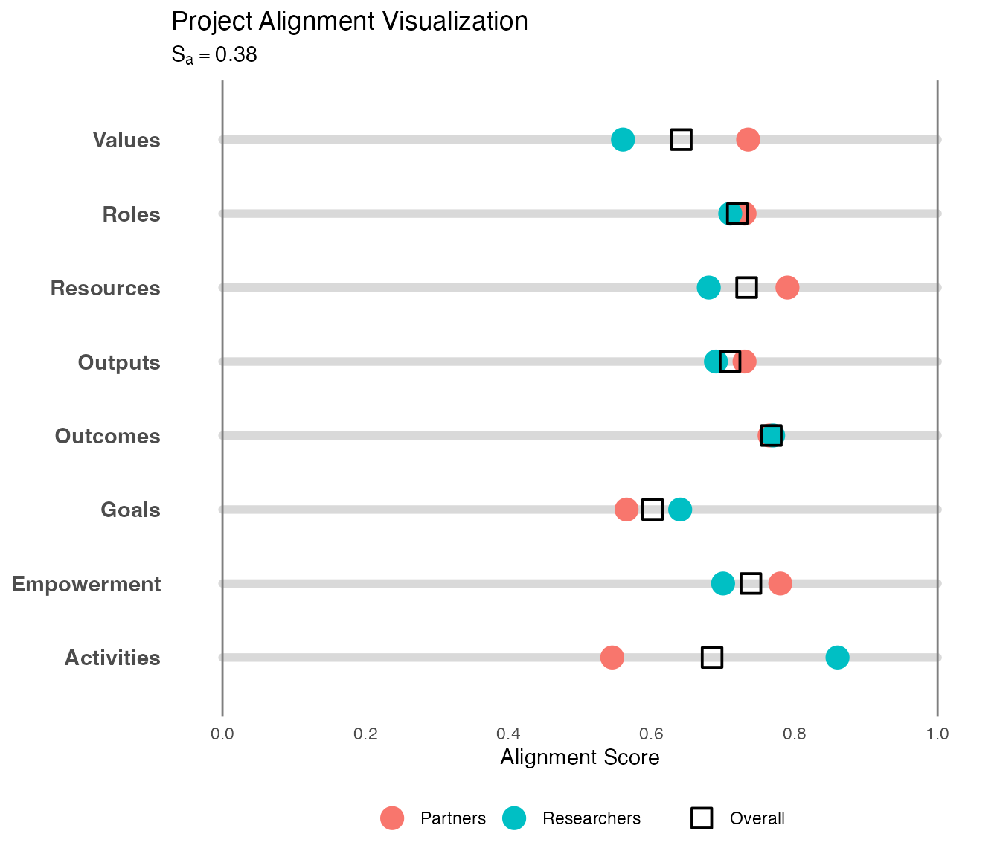

What is Alignment?
The Alignment Score () measures the degree of consensus between researchers and community partners across key aspects of your project. It answers the fundamental question: “Do we see this partnership the same way?”
High alignment doesn’t just mean everyone agrees, it means researchers and partners share a common understanding of how the work is being carried out. Misalignment, conversely, reveals assumptions, communication gaps, or power imbalances that need attention.
Why Alignment Matters
The Priority Mapping process that informed CEnTR*IMPACT development revealed that community-engaged scholars value shared decision-making, prioritizing community needs, and relationship building above traditional indicators like contact hours or participant counts. Alignment captures these values quantitatively.
Research on community-based participatory research (CBPR) consistently shows that alignment on goals, values, and processes predicts project success, sustainability, and equitable outcomes (Wallerstein & Duran, 2010). When researchers and partners view the partnership differently, projects risk producing outputs that miss community needs, eroding trust, or failing to build lasting capacity.
The Eight Alignment Factors
Alignment is measured across eight dimensions that emerged from the CBPR framework and the Priority Mapping process:
- Goals: The purposes and aims of the project
- Values: The ideals and principles that guide the work
- Roles: Responsibilities and contributions of each party
- Resources: How assets, funding, and capabilities are managed and shared
- Activities: The design and facilitation of events and interventions
- Empowerment: How community culture, knowledge, and language are honored
- Outputs: The types of products created (workshops, articles, policy documents)
- Outcomes: Short-term and long-term changes expected or achieved
Each factor is rated by researchers and community partners on a 0 to 1 scale, where 1 represents complete alignment and 0 represents no alignment.
Understanding the Overall Alignment Score
How It’s Calculated
The overall Alignment Score () is calculated using the Intraclass Correlation Coefficient (ICC), which measures how well the researchers’ ratings resemble the community partners’ ratings across all eight factors. The ICC provides a value between 0 and 1 representing agreement.
Interpretation Guidelines
| Sa Range | Interpretation | What This Means |
|---|---|---|
| < 0.40 | Low Agreement | Significant gaps in shared understanding requiring immediate attention |
| 0.40 - 0.59 | Fair Agreement | Some alignment exists, but notable discrepancies need to be addressed |
| 0.60 - 0.74 | Good Agreement | Strong shared vision with minor gaps that can be refined |
| > 0.75 | Excellent Agreement | Very high alignment indicating robust mutual understanding |
These guidelines follow Cicchetti’s (1994) standards for interpreting ICC in non-clinical applications.
Example: Interpreting Your Alignment Score
Let’s work through the example from the Getting Started vignette:
# Generate example data
alignment_data <- generate_alignment_data(seed = 36)
# Analyze alignment
alignment_results <- analyze_alignment(alignment_data)
# View the overall score
print(alignment_results$alignment_score)
#> [1] 0.3829787What Sa = 0.38 Tells Us
An overall Alignment Score of 0.38 falls into the Low Agreement range. This indicates that researchers and community partners view key aspects of the project quite differently. However, the overall score is just the starting point—the real insights come from examining the factor-level details.
Interpreting Factor-Level Alignment
The true power of alignment analysis lies in the factor-level breakdown:
# View factor-level scores
print(alignment_results$table)
#> alignment partner researcher
#> 1 Activities 0.545 0.86
#> 2 Empowerment 0.780 0.70
#> 3 Goals 0.565 0.64
#> 4 Outcomes 0.765 0.77
#> 5 Outputs 0.730 0.69
#> 6 Resources 0.790 0.68
#> 7 Roles 0.730 0.71
#> 8 Values 0.735 0.56Reading the Factor Scores
Each row shows: - Alignment factor - The dimension being measured - Researcher score - Researchers’ interpolated median rating (0-1) - Partner score - Community partners’ interpolated median rating (0-1) - Overall score - Geometric mean of the two groups
Pattern Analysis: What to Look For
1. Strong Mutual Alignment (scores close together)
Empowerment: Researchers 0.70, Partners 0.78
Goals: Researchers 0.64, Partners 0.57
Outcomes: Researchers 0.77, Partners 0.77
Outputs: Researchers 0.69, Partners 0.73
Resources: Researchers 0.68, Partners 0.79
Roles: Researchers 0.71, Partners 0.73When both groups rate a factor similarly (within ~0.10), this indicates genuine shared understanding. Values showing close alignment means you have a strong foundation of shared principles to build upon.
Note that Resources shows a slightly larger gap (0.11) than 0.10, but is included here under the “strong alignment” category because both scores are relatively high (>0.65), indicating overall positive perception despite the gap.
2. Researcher-Heavy Perception (researchers rate much higher)
Activities: Researchers 0.86, Partners 0.55Large gaps where researchers rate higher (>0.20 difference) suggest researchers perceive strength or clarity that partners don’t experience. This pattern often indicates:
- Resources: Researchers feel well-equipped, but partners may not know what’s available or how to access resources
- Outputs: Researchers are satisfied with deliverables, but partners find them less useful or relevant
- Roles: Researchers see clear definitions, but partners experience ambiguity or feel constrained
3. Partner-Leading Perception (partners rate much higher)
Values: Researchers 0.56, Partners 0.74When partners rate factors higher than researchers, they may: - Feel more positively about their agency and impact than researchers realize - See potential for change that researchers are more cautious about claiming - Experience benefits researchers don’t fully recognize
4. Mutual Low Scores (both groups rate low)
When both groups rate a factor low (both < 0.50), this signals: - A dimension that genuinely needs development - Shared recognition of an area requiring attention - Potential opportunity for collaborative improvement
5. Mutual High Scores (both groups rate high)
When both groups rate a factor high (both > 0.75), this indicates: - A genuine strength to maintain and leverage - Successful practices worth documenting and replicating - Foundation for addressing other areas
Visualizing Alignment
The Slopegraph
# Create slopegraph
plot_alignment <- visualize_alignment(alignment_results)
print(plot_alignment)
The slopegraph reveals alignment patterns at a glance:
- Parallel lines (e.g., Outcomes) = Close alignment, both groups see it similarly
- Crossing lines = Contrasting perceptions worth exploring
- Steep slopes = Large perception gaps requiring dialogue
- Highest overall scores = Relative strengths
- Lowest overall scores = Areas needing attention
The Abacus Plot
# Create abacus plot
plot_abacus <- visualize_abacus(alignment_results)
print(plot_abacus)
The abacus plot shows where each group’s “beads” sit on each factor line, making gaps visually obvious.
What Different Alignment Patterns Mean
Pattern 1: Strong Values, Weak Operations
Example from our data:
Values: Both ~0.65 (aligned)
Resources: 0.82 vs 0.49 (gap of 0.33)
Roles: 0.90 vs 0.57 (gap of 0.33)Interpretation: You share a philosophical foundation but struggle with practical implementation. Partners may feel excluded from operational decisions even though everyone agrees on principles.
Action Steps: 1. Host a resource transparency workshop where budgets and assets are openly discussed 2. Co-create a resource allocation decision-making process 3. Facilitate a roles clarification exercise with all parties 4. Document agreed-upon roles in accessible formats 5. Create feedback mechanisms for partners to raise role-related concerns
Pattern 2: Output Disconnect
Outputs: Researchers 0.90, Partners 0.57 (gap of 0.33)Interpretation: Researchers are producing many deliverables and feel productive, but partners don’t find these outputs as useful or relevant. This is a critical red flag—you may be creating products the community doesn’t want or need.
Action Steps: 1. Form an outputs review committee with community partners in leadership 2. For each planned output, ask: “Who needs this? For what purpose?” 3. Assess existing outputs for cultural relevance and accessibility 4. Shift from researcher-designed to co-designed deliverables 5. Create community-defined success criteria for outputs
Pattern 3: Empowerment and Outcome Optimism
Empowerment: Researchers 0.68, Partners 0.77
Outcomes: Researchers 0.61, Partners 0.74Interpretation: Community partners feel more empowered and optimistic about outcomes than researchers perceive. This is actually a positive sign—partners are experiencing agency and seeing impact potential that researchers might be too cautious to claim.
Action Steps: 1. Document and amplify partner voices about empowerment experiences 2. Take partner outcome expectations seriously in project planning 3. Avoid researcher tendency to downplay impact out of academic caution 4. Use partner optimism as energy for next-phase goal setting 5. Ensure evaluation frameworks capture the empowerment partners report
Pattern 4: Universal Misalignment
Overall Sa < 0.40 with gaps across all factorsInterpretation: Fundamental disconnect in how the partnership is understood. This requires pause and honest conversation.
Action Steps: 1. Schedule a dedicated alignment dialogue session (not a working meeting) 2. Use these scores as conversation starters, not accusations 3. Share the visualization with all parties and discuss reactions 4. Identify one factor where you can quickly improve alignment 5. Agree on regular alignment check-ins moving forward
Pattern 5: Strong Universal Alignment
Overall Sa > 0.75 with factor scores all > 0.70Interpretation: Excellent shared understanding across the partnership. This is worth celebrating and maintaining.
Action Steps: 1. Document what practices led to this alignment 2. Share these practices with other teams/projects 3. Monitor for drift—alignment can erode over time 4. Use this strong foundation to tackle challenging next-phase work 5. Don’t become complacent; continue regular communication
Interpreting Alignment by Project Stage
Appropriate alignment levels vary by project phase:
Early Stage (Months 0-6)
Expected patterns: - Lower alignment on Outputs/Outcomes (not yet co-designed) - Higher alignment on Goals/Values (used to establish partnership) - Growing alignment on Roles (still being negotiated)
Red flags: - Low alignment on Values this early signals fundamental incompatibility - Perfect alignment across all factors may indicate researchers answered for partners
Mid-Stage (Months 6-24)
Expected patterns: - Strengthening alignment on Activities as implementation proceeds - Clearer alignment on Roles as responsibilities solidify - Growing alignment on Outputs as products are co-created
Red flags: - Decreasing alignment on any factor indicates growing disconnect - Persistent gaps on Resources signal ongoing exclusion from decisions
Late Stage (Months 24+)
Expected patterns: - Strong alignment on Outcomes as results emerge - High alignment on most factors reflecting mature partnership - Clarity on Roles and Resources from sustained collaboration
Red flags: - New misalignment on Goals/Values suggests mission drift - Low alignment on Sustainability factors risks partnership collapse post-project
Common Misinterpretations
Mistake 1: “Higher scores are always better”
Not necessarily. An Outcomes score of 0.90 when you’re only 3 months into a project suggests inflated expectations rather than genuine alignment. Context matters.
Mistake 2: “Low alignment means failure”
Low alignment means you’ve identified areas needing attention. It’s a diagnostic tool, not a judgment. Many successful partnerships started with low alignment and improved through intentional dialogue.
Mistake 3: “We should aim for perfect alignment”
Some healthy tension is productive. Researchers and partners bring different expertise and perspectives. The goal is sufficient alignment to work effectively, not identical viewpoints.
Mistake 4: “Partners rated us low because they’re dissatisfied”
Not always. Lower partner ratings on Resources might mean they don’t know what’s available. Lower ratings on Empowerment might reflect realistic assessment of structural constraints. Explore before assuming.
Mistake 5: “High alignment on Values is enough”
Values alignment is necessary but insufficient. You need operational alignment (Resources, Roles, Activities) to translate shared principles into effective action.
Using Alignment Scores for Action Planning
Step 1: Identify Priority Factors
Focus on factors with: - Largest gaps (>0.25 difference between groups) - Mutual low scores (both groups <0.50) - Critical importance (Goals, Values, Roles as foundation)
Step 2: Understand the “Why”
For each priority factor, ask: - What assumptions might each group be making? - Where might communication have broken down? - What power dynamics might be at play? - What past experiences inform current perceptions?
Step 3: Design Targeted Interventions
| Factor | Sample Interventions |
|---|---|
| Goals | Facilitated goal-setting workshop, shared vision statement development |
| Values | Values alignment exercise, CBPR principles training for all parties |
| Roles | Responsibility charting, role clarification one-on-ones |
| Resources | Open budget meetings, shared resource database, allocation decisions |
| Activities | Co-design sessions, post-event debriefs, activity feedback loops |
| Empowerment | Cultural wealth assessment, language access review, power-sharing audit |
| Outputs | Products review committee, user testing, cultural relevance checks |
| Outcomes | Shared outcomes framework, community-defined success indicators |
Step 4: Implement and Monitor
- Choose 2-3 factors to address first (don’t try to fix everything at once)
- Set specific, measurable goals (e.g., “Close the Resources gap by 0.15 within 6 months”)
- Reassess alignment quarterly or at natural project milestones
- Track changes over time to evaluate intervention effectiveness
Communicating About Alignment
With Community Partners
Do: - Share visualizations and explain what they mean - Frame as opportunity for improvement, not criticism - Ask partners to help interpret the patterns - Co-develop action plans based on findings
Don’t: - Use scores to prove partners “wrong” - Present results without context or conversation - Act on results without partner input - Make defensive excuses for gaps
With Research Team
Do: - Explore why team members rated factors as they did - Discuss what partner ratings reveal about their experience - Identify assumptions team may have been making - Commit to specific changes in practice
Don’t: - Dismiss partner ratings as “misunderstandings” - Assume higher researcher ratings mean researchers are “right” - Focus only on factors where partners rated lower - Skip the hard conversations about power and privilege
For Evaluation/Reporting
Do: - Report both overall and factor-level scores - Explain what the scores mean in context - Describe actions taken to address misalignment - Show score changes over time when available
Don’t: - Use alignment scores as sole evidence of partnership quality - Compare across projects without acknowledging different contexts - Present scores without qualitative narrative - Claim credit for alignment without noting areas needing work
Advanced Interpretation: Analyzing the ICC Components
For those interested in deeper understanding, the ICC calculation provides additional insights:
# View the full ICC output
print(alignment_results$icc)
#> Single Score Intraclass Correlation
#>
#> Model: twoway
#> Type : agreement
#>
#> Subjects = 8
#> Raters = 2
#> ICC(A,1) = -0.383
#>
#> F-Test, H0: r0 = 0 ; H1: r0 > 0
#> F(7,6.99) = 0.515 , p = 0.799
#>
#> 95%-Confidence Interval for ICC Population Values:
#> -1.05 < ICC < 0.473Key elements:
- F-statistic and p-value: Tests whether agreement is better than random chance
- Confidence interval: Range of plausible ICC values for the population
- Model type: “twoway” with “agreement” measures absolute agreement
A non-significant p-value (p > 0.05) with your observed ICC means the agreement could be due to chance. In our example with p = 0.799, the low ICC is not just sampling variability—it reflects genuine misalignment requiring attention.
Conclusion
Alignment scores reveal the health of researcher-community partner relationships in quantifiable terms. Key takeaways:
- Overall scores provide direction, but factor-level details drive action
- Gaps aren’t failures—they’re opportunities for dialogue and growth
- Context matters: Project stage, partnership history, and power dynamics all influence interpretation
- Use scores as conversation starters, not conversation enders
- Monitor change over time to assess whether interventions work
- Strong values alignment provides foundation for addressing operational misalignment
When used thoughtfully as part of a broader evaluation approach, alignment scores help partnerships move from assumptions to explicit understanding, from talking past each other to genuine collaboration, and from researcher-driven to truly co-created community-engaged scholarship.
References
Cicchetti, D. V. (1994). Guidelines, criteria, and rules of thumb for evaluating normed and standardized assessment instruments in psychology. Psychological Assessment, 6(4), 284-290.
Price, J. F. (2024). CEnTRIMPACT: Community Engaged and Transformative Research – Inclusive Measurement of Projects & Community Transformation* (CUMU-Collaboratory Fellowship Report). Coalition of Urban and Metropolitan Universities.
Wallerstein, N., & Duran, B. (2010). Community-Based Participatory Research Contributions to Intervention Research: The Intersection of Science and Practice to Improve Health Equity. American Journal of Public Health, 100(S1), S40-S46.